2022 Higher Human Biology - Paper 2 questions
Source: Scottish Qualifications Authority (SQA) / Qualifications Scotland. This is a StemInteract HTML companion, not an official HTML edition. Extracted text is supplied alongside unaltered page images; use the images or original PDF for table layout, diagrams and symbols.
Jump to a question
PDF page 1
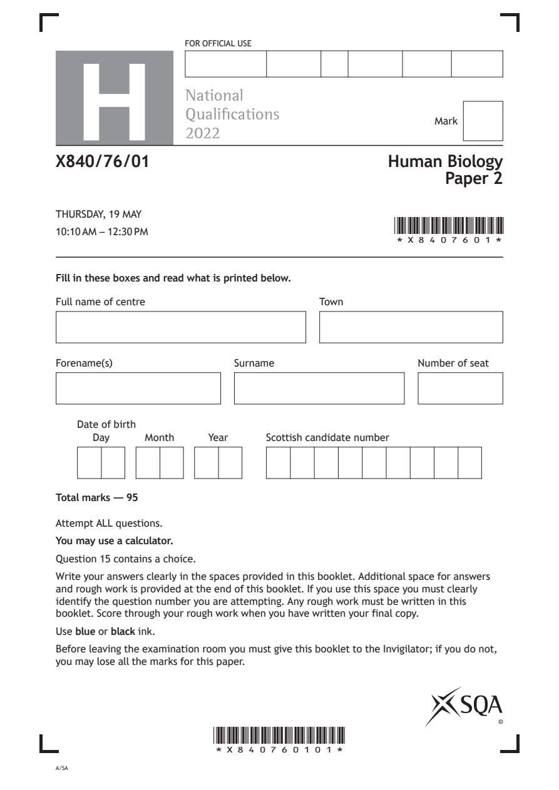
Selectable page text
FOR OFFICIAL USE
H
National
Qualications
Mark
2022
X840/76/01 Human Biology
Paper 2
THURSDAY, 19 MAY
10:10 AM – 12:30 PM
*X8407601*
Fill in these boxes and read what is printed below.
Full name of centre Town
Forename(s) Surname Number of seat
Date of birth
Day Month Year Scottish candidate number
Total marks — 95
Attempt ALL questions.
You may use a calculator.
Question 15 contains a choice.
Write your answers clearly in the spaces provided in this booklet. Additional space for answers
and rough work is provided at the end of this booklet. If you use this space you must clearly
identify the question number you are attempting. Any rough work must be written in this
booklet. Score through your rough work when you have written your final copy.
Use blue or black ink.
Before leaving the examination room you must give this booklet to the Invigilator; if you do not,
you may lose all the marks for this paper.
©
*X840760101*
A/SAPDF page 2
Question 1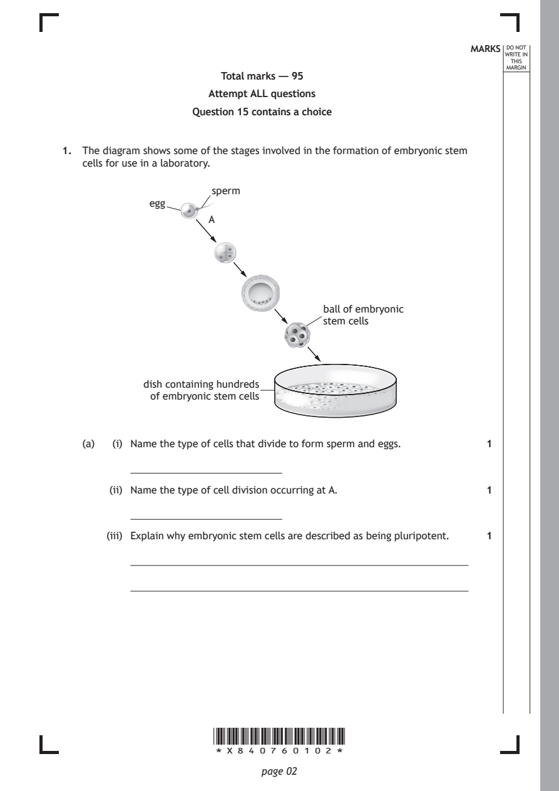
Selectable page text
MARKS DO NOT
WRITE IN
THIS
MARGIN
Total marks — 95
Attempt ALL questions
Question 15 contains a choice
1. The diagram shows some of the stages involved in the formation of embryonic stem
cells for use in a laboratory.
sperm
egg
A
ball of embryonic
stem cells
dish containing hundreds
of embryonic stem cells
(a) (i) Name the type of cells that divide to form sperm and eggs. 1
(ii) Name the type of cell division occurring at A. 1
(iii) Explain why embryonic stem cells are described as being pluripotent. 1
*X840760102*
page 02PDF page 3
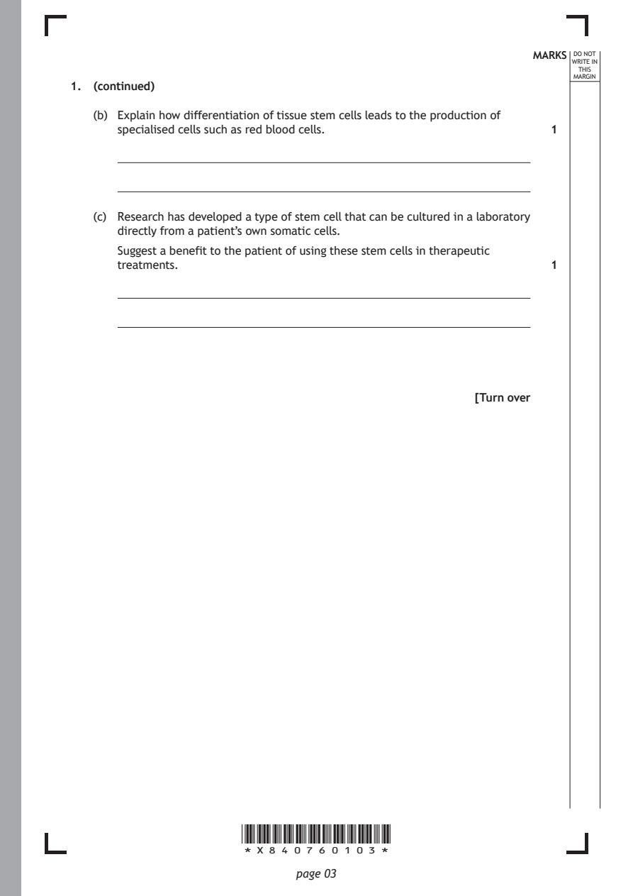
Selectable page text
MARKS DO NOT
WRITE IN
THIS
MARGIN
1. (continued)
(b) Explain how differentiation of tissue stem cells leads to the production of
specialised cells such as red blood cells. 1
(c) Research has developed a type of stem cell that can be cultured in a laboratory
directly from a patient’s own somatic cells.
Suggest a benefit to the patient of using these stem cells in therapeutic
treatments. 1
[Turn over
*X840760103*
page 03PDF page 4
Question 2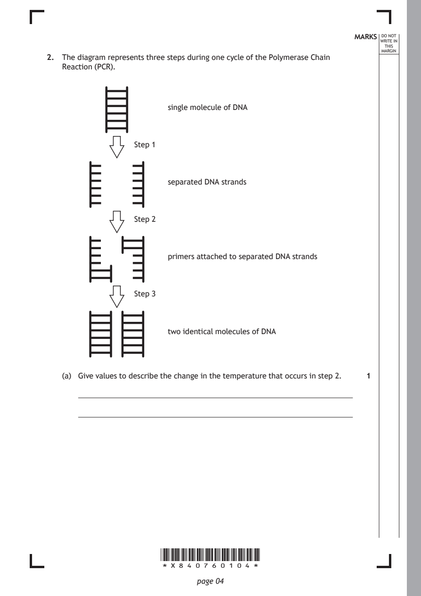
Selectable page text
MARKS DO NOT
WRITE IN
THIS
MARGIN
2. The diagram represents three steps during one cycle of the Polymerase Chain
Reaction (PCR).
single molecule of DNA
Step 1
separated DNA strands
Step 2
primers attached to separated DNA strands
Step 3
two identical molecules of DNA
(a) Give values to describe the change in the temperature that occurs in step 2. 1
*X840760104*
page 04PDF page 5
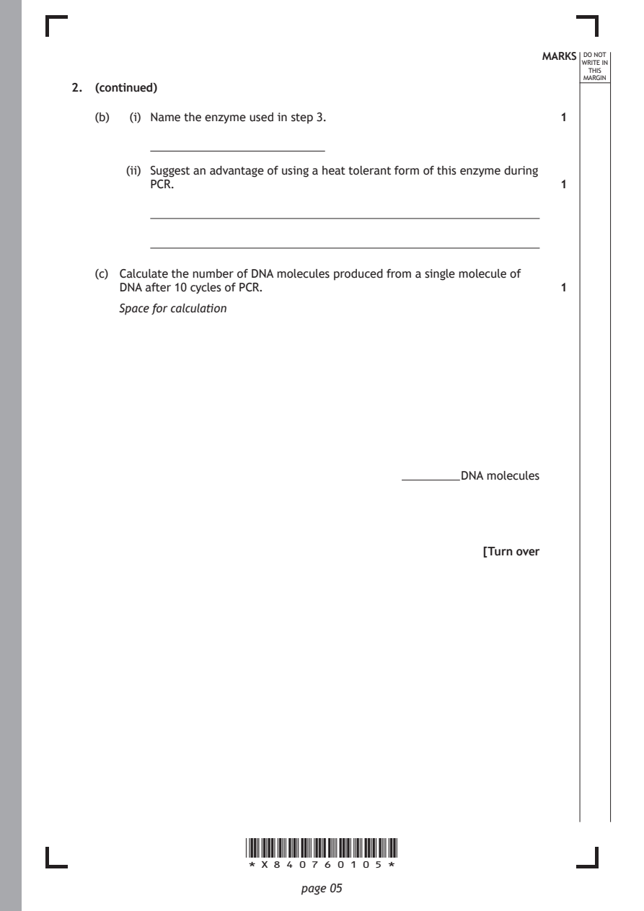
Selectable page text
MARKS DO NOT
WRITE IN
THIS
MARGIN
2. (continued)
(b) (i) Name the enzyme used in step 3. 1
(ii) Suggest an advantage of using a heat tolerant form of this enzyme during
PCR. 1
(c) Calculate the number of DNA molecules produced from a single molecule of
DNA after 10 cycles of PCR. 1
Space for calculation
DNA molecules
[Turn over
*X840760105*
page 05PDF page 6
Question 3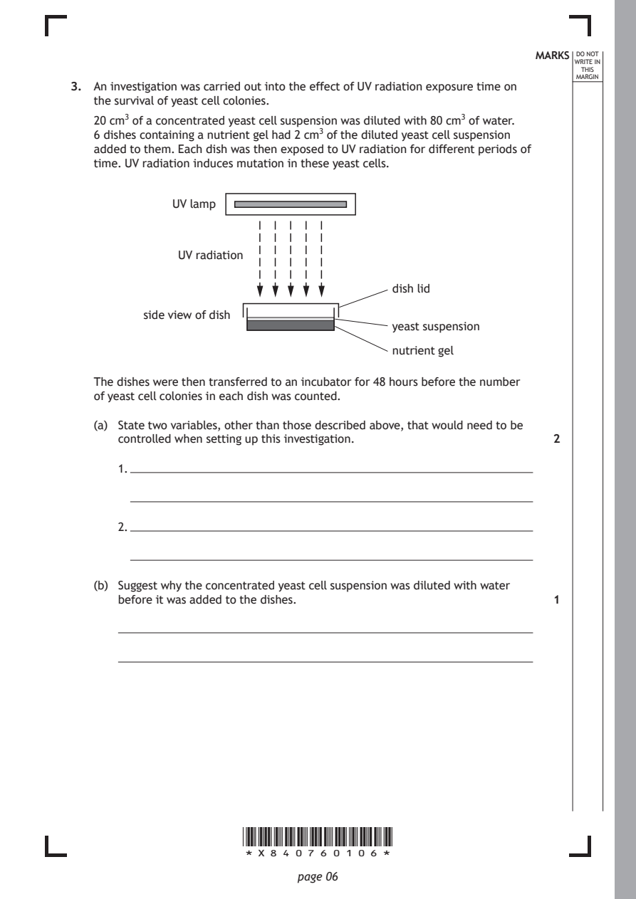
Selectable page text
MARKS DO NOT
WRITE IN
THIS
MARGIN
3. An investigation was carried out into the effect of UV radiation exposure time on
the survival of yeast cell colonies.
20 cm3 of a concentrated yeast cell suspension was diluted with 80 cm3 of water.
6 dishes containing a nutrient gel had 2 cm3 of the diluted yeast cell suspension
added to them. Each dish was then exposed to UV radiation for different periods of
time. UV radiation induces mutation in these yeast cells.
UV lamp
UV radiation
dish lid
side view of dish
yeast suspension
nutrient gel
The dishes were then transferred to an incubator for 48 hours before the number
of yeast cell colonies in each dish was counted.
(a) State two variables, other than those described above, that would need to be
controlled when setting up this investigation. 2
1.
2.
(b) Suggest why the concentrated yeast cell suspension was diluted with water
before it was added to the dishes. 1
*X840760106*
page 06PDF page 7
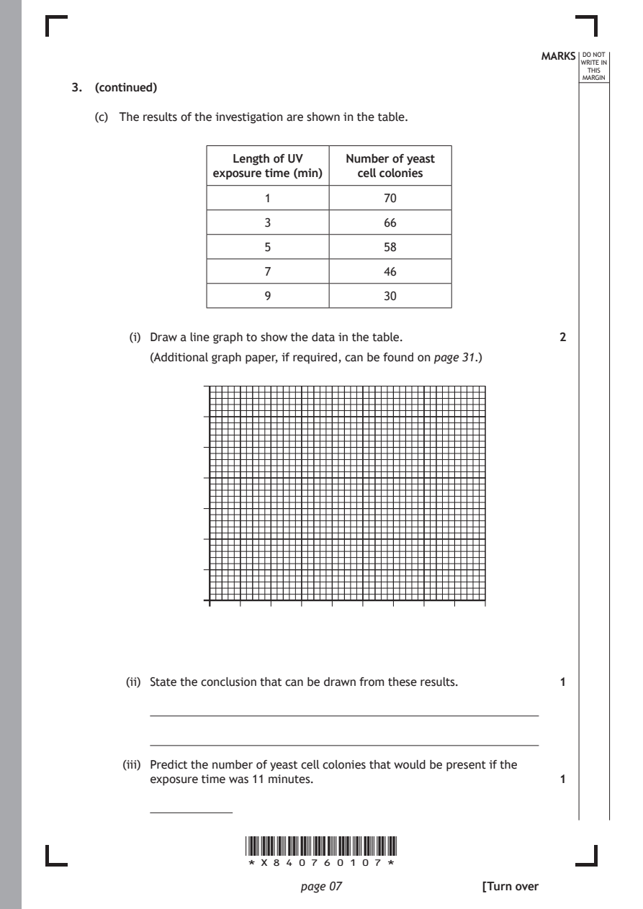
Selectable page text
MARKS DO NOT
WRITE IN
THIS
MARGIN
3. (continued)
(c) The results of the investigation are shown in the table.
Length of UV Number of yeast
exposure time (min) cell colonies
1 70
3 66
5 58
7 46
9 30
(i) Draw a line graph to show the data in the table. 2
(Additional graph paper, if required, can be found on page 31.)
(ii) State the conclusion that can be drawn from these results. 1
(iii) Predict the number of yeast cell colonies that would be present if the
exposure time was 11 minutes. 1
*X840760107*
page 07 [Turn overPDF page 8
Question 4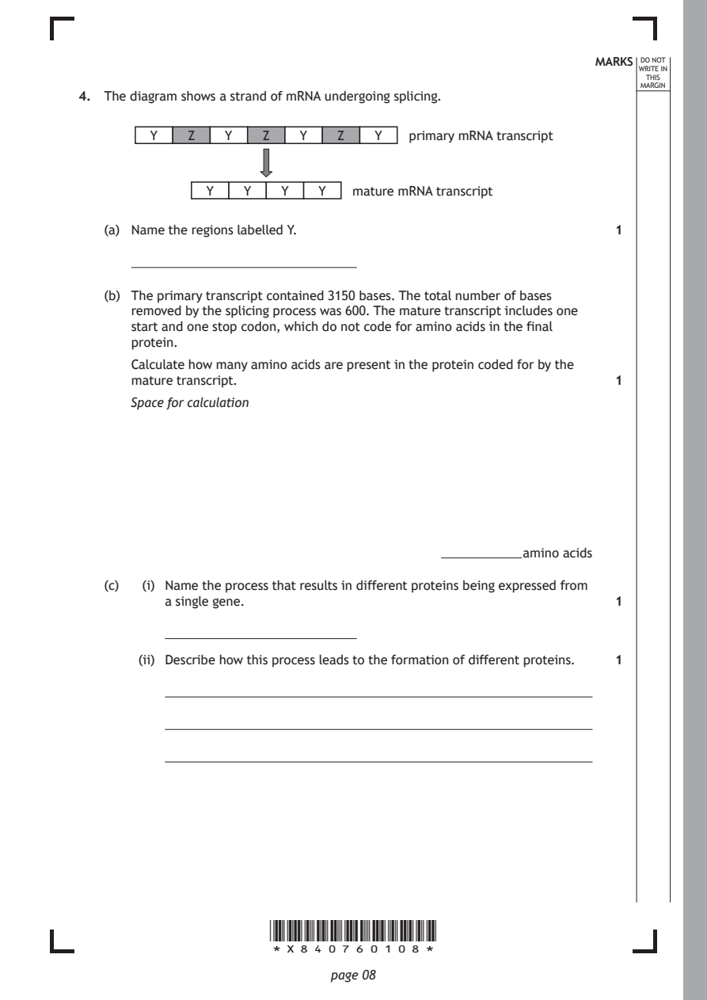
Selectable page text
MARKS DO NOT
WRITE IN
THIS
MARGIN
4. The diagram shows a strand of mRNA undergoing splicing.
Y Z Y Z Y Z Y primary mRNA transcript
Y Y Y Y mature mRNA transcript
(a) Name the regions labelled Y. 1
(b) The primary transcript contained 3150 bases. The total number of bases
removed by the splicing process was 600. The mature transcript includes one
start and one stop codon, which do not code for amino acids in the final
protein.
Calculate how many amino acids are present in the protein coded for by the
mature transcript. 1
Space for calculation
amino acids
(c) (i) Name the process that results in different proteins being expressed from
a single gene. 1
(ii) Describe how this process leads to the formation of different proteins. 1
*X840760108*
page 08PDF page 9
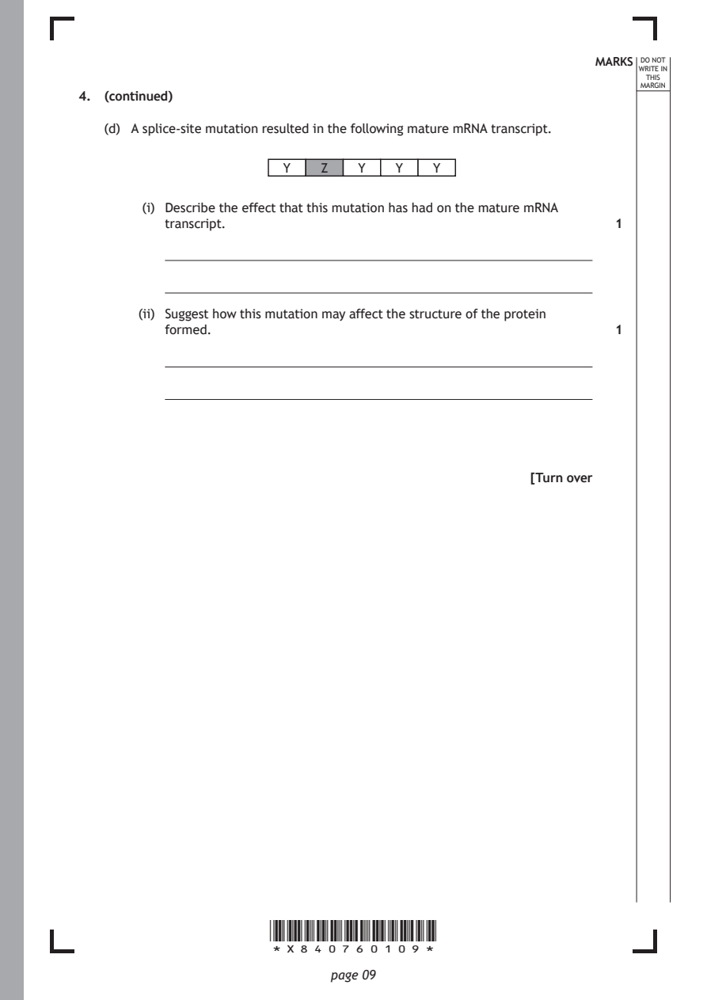
Selectable page text
MARKS DO NOT
WRITE IN
THIS
MARGIN
4. (continued)
(d) A splice-site mutation resulted in the following mature mRNA transcript.
Y Z Y Y Y
(i) Describe the effect that this mutation has had on the mature mRNA
transcript. 1
(ii) Suggest how this mutation may affect the structure of the protein
formed. 1
[Turn over
*X840760109*
page 09PDF page 10
Question 5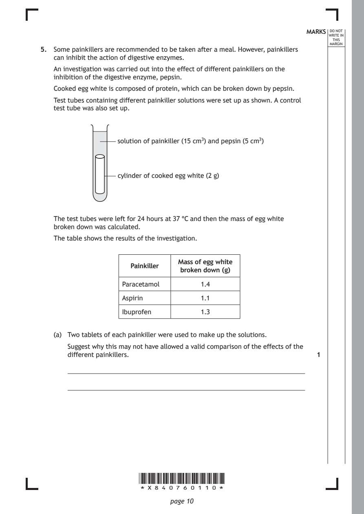
Selectable page text
MARKS DO NOT
WRITE IN
THIS
MARGIN
5. Some painkillers are recommended to be taken after a meal. However, painkillers
can inhibit the action of digestive enzymes.
An investigation was carried out into the effect of different painkillers on the
inhibition of the digestive enzyme, pepsin.
Cooked egg white is composed of protein, which can be broken down by pepsin.
Test tubes containing different painkiller solutions were set up as shown. A control
test tube was also set up.
solution of painkiller (15 cm3) and pepsin (5 cm3)
cylinder of cooked egg white (2 g)
The test tubes were left for 24 hours at 37 °C and then the mass of egg white
broken down was calculated.
The table shows the results of the investigation.
Mass of egg white
Painkiller
broken down (g)
Paracetamol 1.4
Aspirin 1.1
Ibuprofen 1.3
(a) Two tablets of each painkiller were used to make up the solutions.
Suggest why this may not have allowed a valid comparison of the effects of the
different painkillers. 1
*X840760110*
page 10PDF page 11
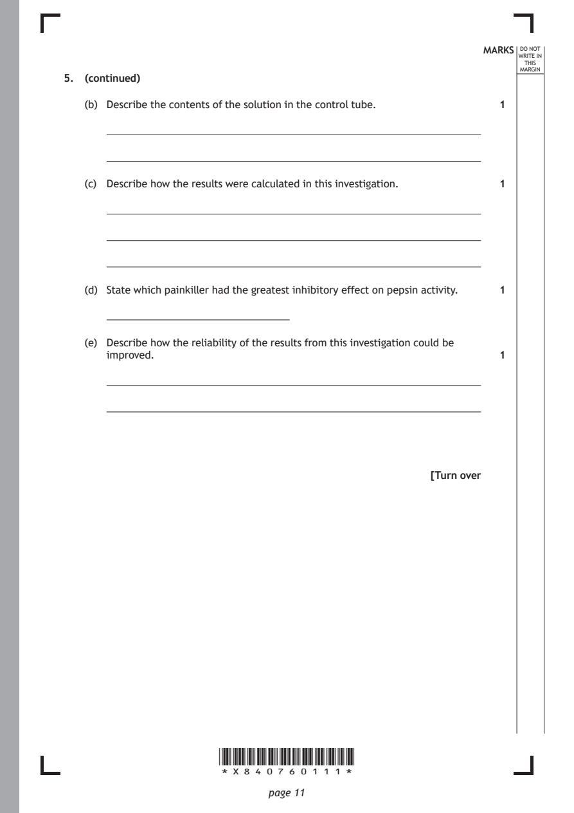
Selectable page text
MARKS DO NOT
WRITE IN
THIS
MARGIN
5. (continued)
(b) Describe the contents of the solution in the control tube. 1
(c) Describe how the results were calculated in this investigation. 1
(d) State which painkiller had the greatest inhibitory effect on pepsin activity. 1
(e) Describe how the reliability of the results from this investigation could be
improved. 1
[Turn over
*X840760111*
page 11PDF page 12
Question 6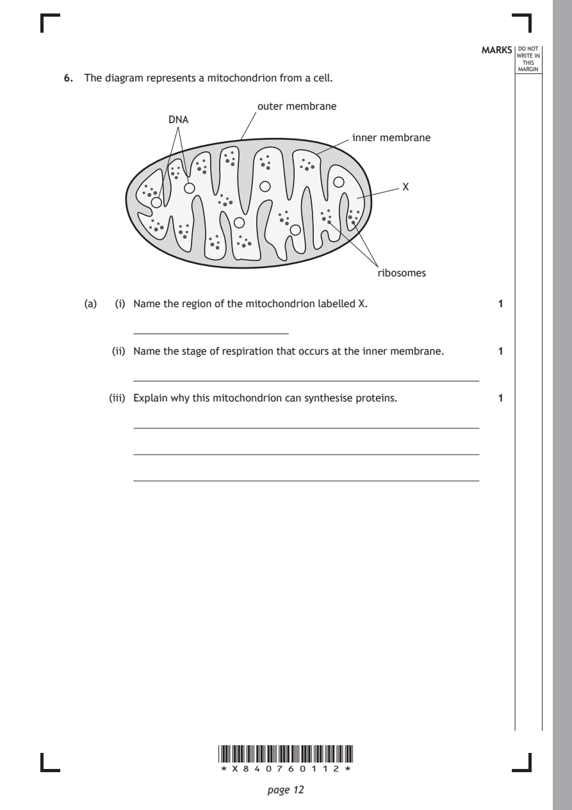
Selectable page text
MARKS DO NOT
WRITE IN
THIS
MARGIN
6. The diagram represents a mitochondrion from a cell.
outer membrane
DNA
inner membrane
X
ribosomes
(a) (i) Name the region of the mitochondrion labelled X. 1
(ii) Name the stage of respiration that occurs at the inner membrane. 1
(iii) Explain why this mitochondrion can synthesise proteins. 1
*X840760112*
page 12PDF page 13
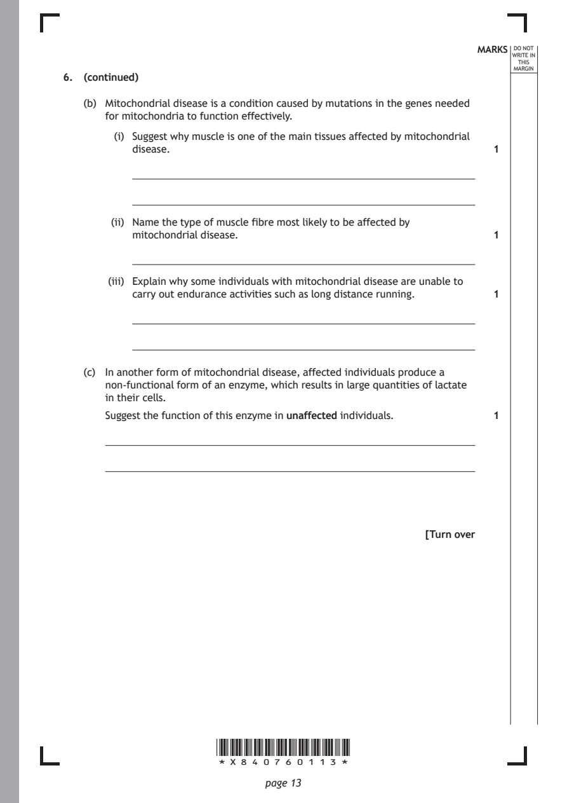
Selectable page text
MARKS DO NOT
WRITE IN
THIS
MARGIN
6. (continued)
(b) Mitochondrial disease is a condition caused by mutations in the genes needed
for mitochondria to function effectively.
(i) Suggest why muscle is one of the main tissues affected by mitochondrial
disease. 1
(ii) Name the type of muscle fibre most likely to be affected by
mitochondrial disease. 1
(iii) Explain why some individuals with mitochondrial disease are unable to
carry out endurance activities such as long distance running. 1
(c) In another form of mitochondrial disease, affected individuals produce a
non-functional form of an enzyme, which results in large quantities of lactate
in their cells.
Suggest the function of this enzyme in unaffected individuals. 1
[Turn over
*X840760113*
page 13PDF page 14
Question 7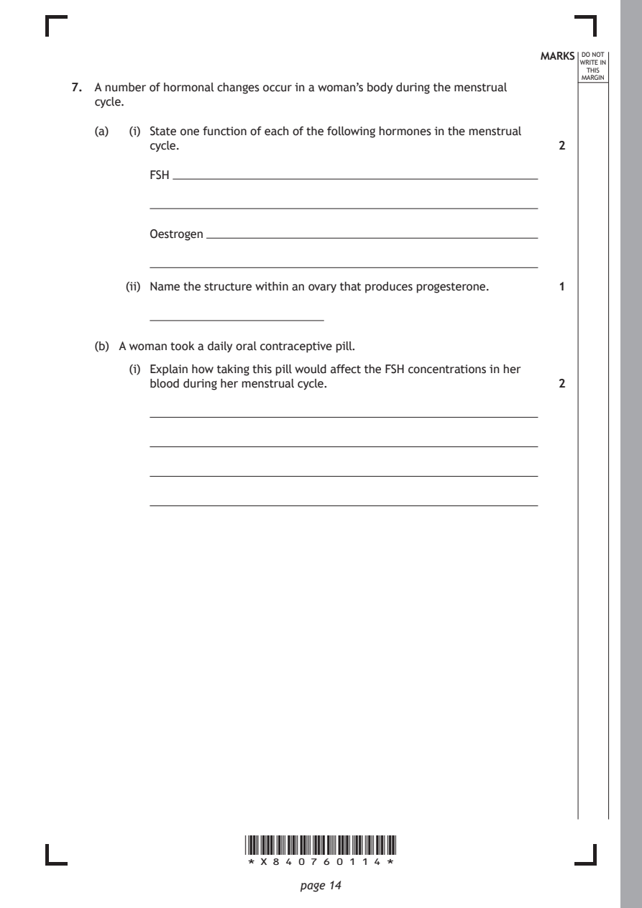
Selectable page text
MARKS DO NOT
WRITE IN
THIS
MARGIN
7. A number of hormonal changes occur in a woman’s body during the menstrual
cycle.
(a) (i) State one function of each of the following hormones in the menstrual
cycle. 2
FSH
Oestrogen
(ii) Name the structure within an ovary that produces progesterone. 1
(b) A woman took a daily oral contraceptive pill.
(i) Explain how taking this pill would affect the FSH concentrations in her
blood during her menstrual cycle. 2
*X840760114*
page 14PDF page 15
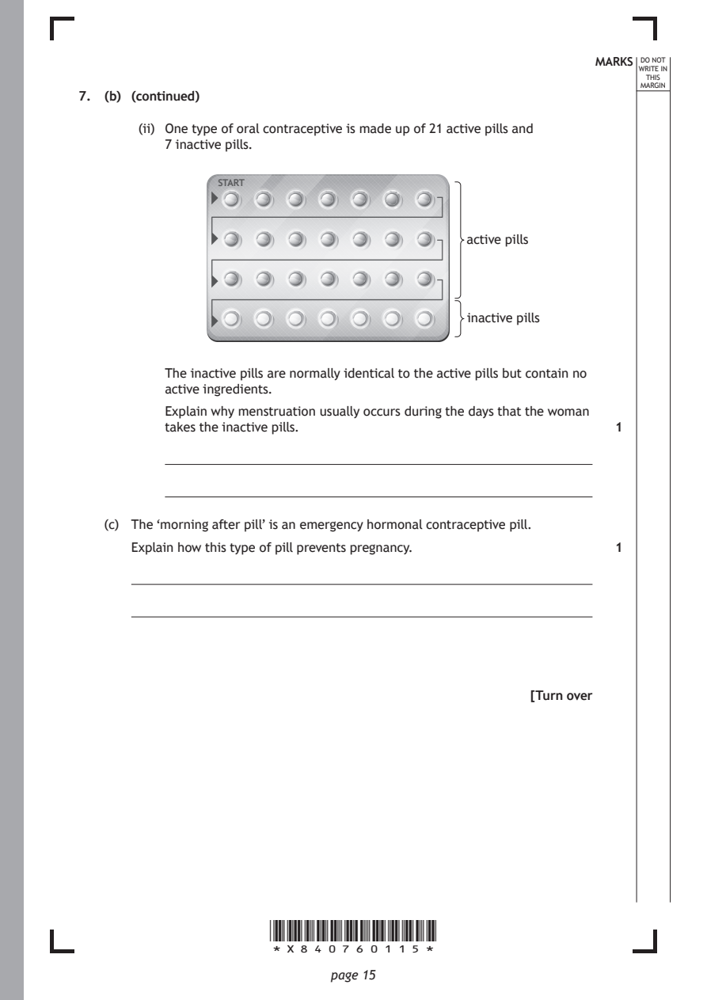
Selectable page text
MARKS DO NOT
WRITE IN
THIS
MARGIN
7. (b) (continued)
(ii) One type of oral contraceptive is made up of 21 active pills and
7 inactive pills.
START
active pills
inactive pills
The inactive pills are normally identical to the active pills but contain no
active ingredients.
Explain why menstruation usually occurs during the days that the woman
takes the inactive pills. 1
(c) The ‘morning after pill’ is an emergency hormonal contraceptive pill.
Explain how this type of pill prevents pregnancy. 1
[Turn over
*X840760115*
page 15PDF page 16
Question 8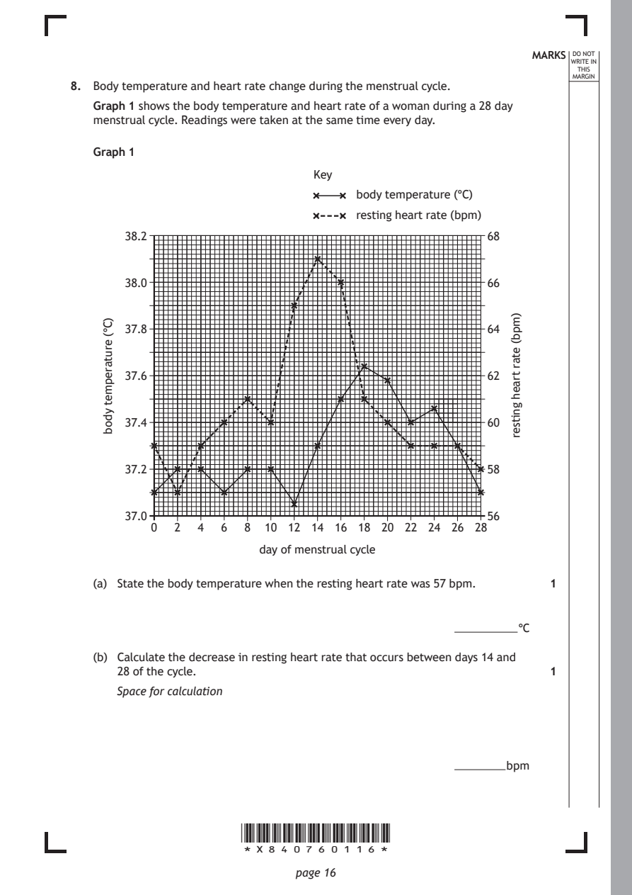
Selectable page text
MARKS DO NOT
WRITE IN
THIS
MARGIN
8. Body temperature and heart rate change during the menstrual cycle.
Graph 1 shows the body temperature and heart rate of a woman during a 28 day
menstrual cycle. Readings were taken at the same time every day.
Graph 1
Key
body temperature (°C)
resting heart rate (bpm)
38.2 68
38.0 66
37.8 64
37.6 62
37.4 60
37.2 58
37.0 56
0 2 4 6 8 10 12 14 16 18 20 22 24 26 28
*X840760116*
page 16
)C°(
erutarepmet
ydob
)mpb(
etar
traeh
gnitser
day of menstrual cycle
(a) State the body temperature when the resting heart rate was 57 bpm. 1
°C
(b) Calculate the decrease in resting heart rate that occurs between days 14 and
28 of the cycle. 1
Space for calculation
bpmPDF page 17
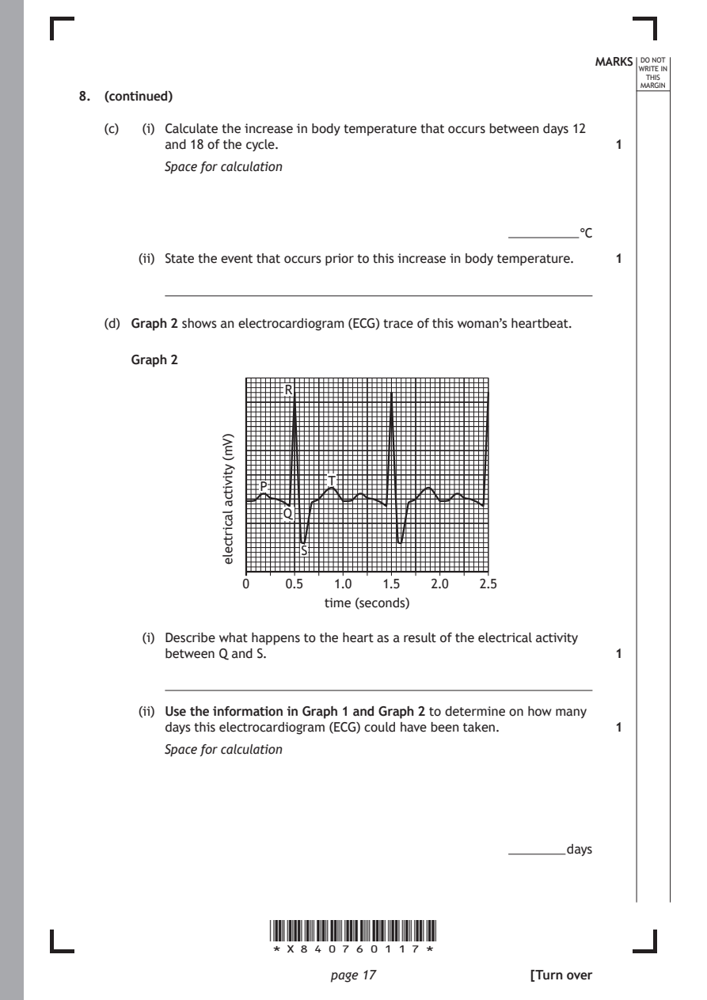
Selectable page text
MARKS DO NOT
WRITE IN
THIS
MARGIN
8. (continued)
(c) (i) Calculate the increase in body temperature that occurs between days 12
and 18 of the cycle.
Space for calculation
°C
(ii) State the event that occurs prior to this increase in body temperature.
(d) Graph 2 shows an electrocardiogram (ECG) trace of this woman’s heartbeat.
Graph 2
R
T
P
Q
S
0 0.5 1.0 1.5 2.0 2.5
*X840760117*
page 17
)Vm(
ytivitca
lacirtcele
1
1
time (seconds)
(i) Describe what happens to the heart as a result of the electrical activity
between Q and S. 1
(ii) Use the information in Graph 1 and Graph 2 to determine on how many
days this electrocardiogram (ECG) could have been taken. 1
Space for calculation
days
[Turn overPDF page 18
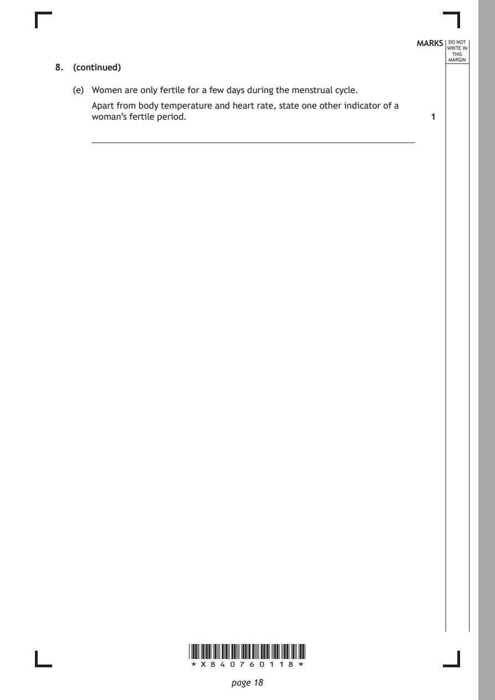
Selectable page text
MARKS DO NOT
WRITE IN
THIS
MARGIN
8. (continued)
(e) Women are only fertile for a few days during the menstrual cycle.
Apart from body temperature and heart rate, state one other indicator of a
woman’s fertile period. 1
*X840760118*
page 18PDF page 19
Question 9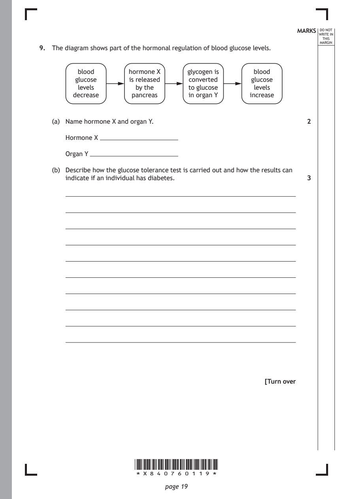
Selectable page text
MARKS DO NOT
WRITE IN
THIS
MARGIN
9. The diagram shows part of the hormonal regulation of blood glucose levels.
blood hormone X glycogen is blood
glucose is released converted glucose
levels by the to glucose levels
decrease pancreas in organ Y increase
(a) Name hormone X and organ Y. 2
Hormone X
Organ Y
(b) Describe how the glucose tolerance test is carried out and how the results can
indicate if an individual has diabetes. 3
[Turn over
*X840760119*
page 19PDF page 20
Question 10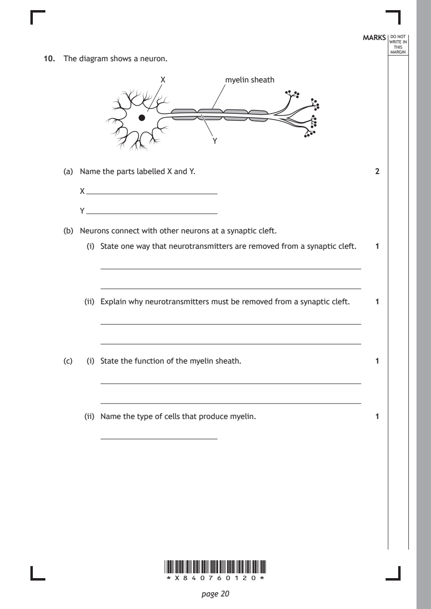
Selectable page text
MARKS DO NOT
WRITE IN
THIS
MARGIN
10. The diagram shows a neuron.
X myelin sheath
Y
(a) Name the parts labelled X and Y. 2
X
Y
(b) Neurons connect with other neurons at a synaptic cleft.
(i) State one way that neurotransmitters are removed from a synaptic cleft. 1
(ii) Explain why neurotransmitters must be removed from a synaptic cleft. 1
(c) (i) State the function of the myelin sheath. 1
(ii) Name the type of cells that produce myelin. 1
*X840760120*
page 20PDF page 21
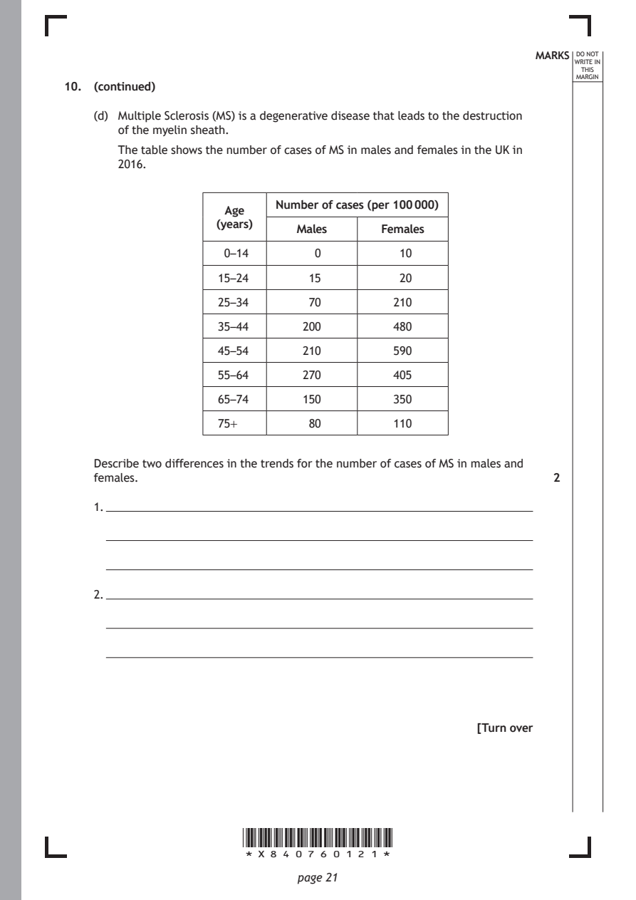
Selectable page text
MARKS DO NOT
WRITE IN
THIS
MARGIN
10. (continued)
(d) Multiple Sclerosis (MS) is a degenerative disease that leads to the destruction
of the myelin sheath.
The table shows the number of cases of MS in males and females in the UK in
2016.
Number of cases (per 100 000)
Age
(years)
Males Females
0–14 0 10
15–24 15 20
25–34 70 210
35–44 200 480
45–54 210 590
55–64 270 405
65–74 150 350
75+ 80 110
Describe two differences in the trends for the number of cases of MS in males and
females. 2
1.
2.
[Turn over
*X840760121*
page 21PDF page 22
Question 11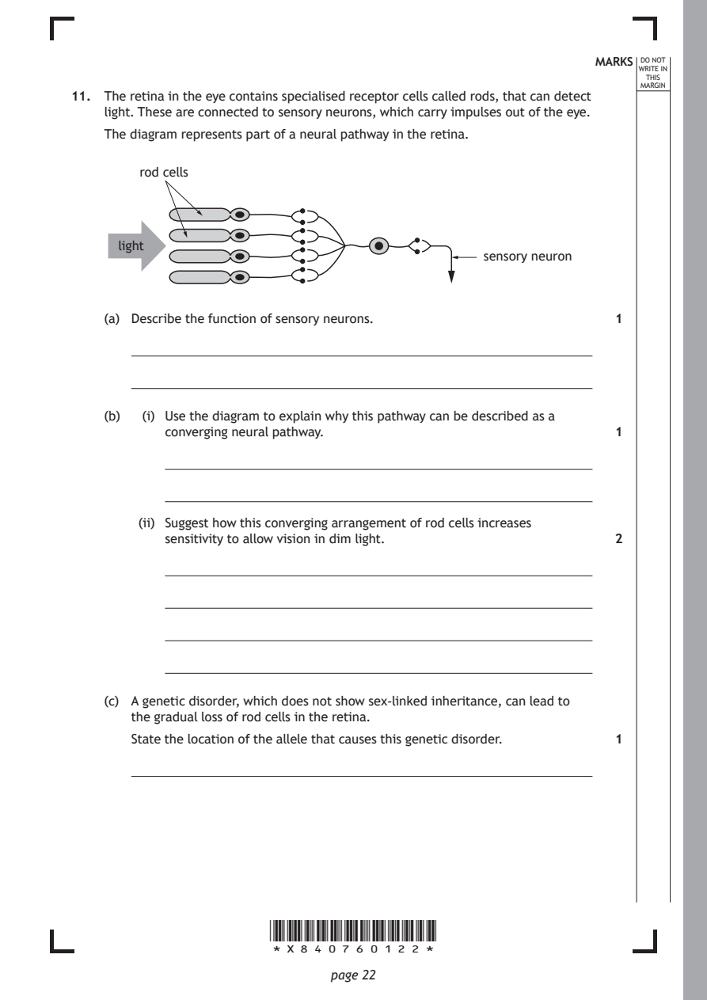
Selectable page text
MARKS DO NOT
WRITE IN
THIS
MARGIN
11. The retina in the eye contains specialised receptor cells called rods, that can detect
light. These are connected to sensory neurons, which carry impulses out of the eye.
The diagram represents part of a neural pathway in the retina.
rod cells
light
sensory neuron
(a) Describe the function of sensory neurons. 1
(b) (i) Use the diagram to explain why this pathway can be described as a
converging neural pathway. 1
(ii) Suggest how this converging arrangement of rod cells increases
sensitivity to allow vision in dim light. 2
(c) A genetic disorder, which does not show sex-linked inheritance, can lead to
the gradual loss of rod cells in the retina.
State the location of the allele that causes this genetic disorder. 1
*X840760122*
page 22PDF page 23
Question 12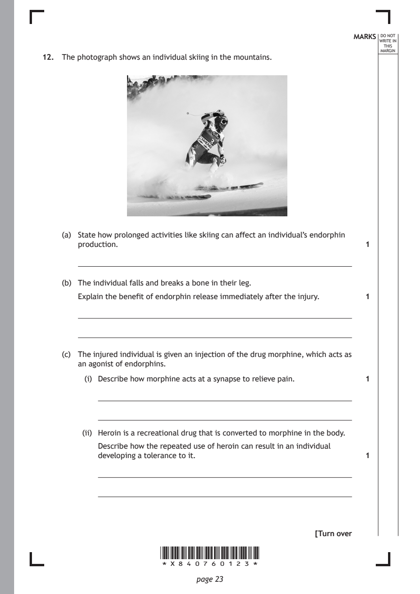
Selectable page text
MARKS DO NOT
WRITE IN
THIS
MARGIN
12. The photograph shows an individual skiing in the mountains.
(a) State how prolonged activities like skiing can affect an individual’s endorphin
production. 1
(b) The individual falls and breaks a bone in their leg.
Explain the benefit of endorphin release immediately after the injury. 1
(c) The injured individual is given an injection of the drug morphine, which acts as
an agonist of endorphins.
(i) Describe how morphine acts at a synapse to relieve pain. 1
(ii) Heroin is a recreational drug that is converted to morphine in the body.
Describe how the repeated use of heroin can result in an individual
developing a tolerance to it. 1
[Turn over
*X840760123*
page 23PDF page 24
Question 13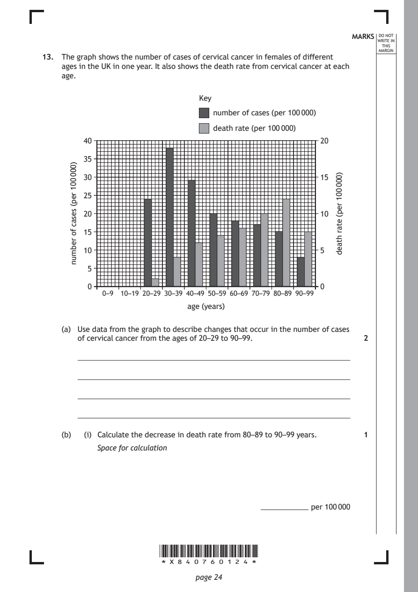
Selectable page text
MARKS DO NOT
WRITE IN
THIS
MARGIN
13. The graph shows the number of cases of cervical cancer in females of different
ages in the UK in one year. It also shows the death rate from cervical cancer at each
age.
Key
number of cases (per 100 000)
death rate (per 100 000)
40 20
35
30 15
25
20 10
15
10 5
5
0 0
0–9 10–19 20–29 30–39 40–49 50–59 60–69 70–79 80–89 90–99
age (years)
*X840760124*
page 24
)000
001
rep(
sesac
fo
rebmun
)000
001
rep(
etar
htaed
(a) Use data from the graph to describe changes that occur in the number of cases
of cervical cancer from the ages of 20–29 to 90–99. 2
(b) (i) Calculate the decrease in death rate from 80–89 to 90–99 years. 1
Space for calculation
per 100 000PDF page 25
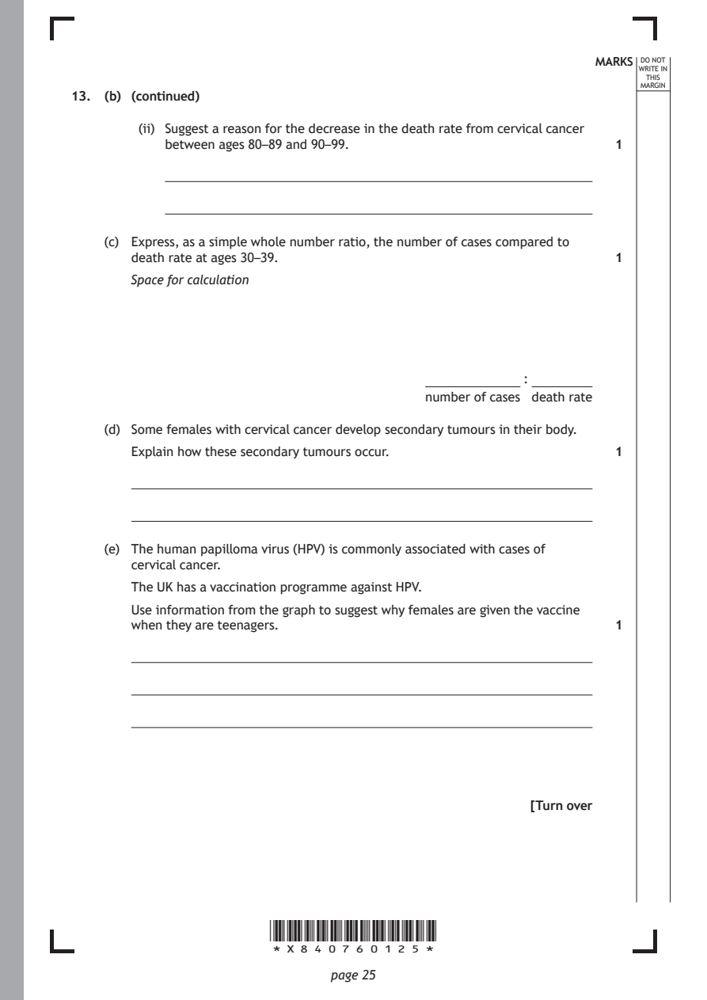
Selectable page text
MARKS DO NOT
WRITE IN
THIS
MARGIN
13. (b) (continued)
(ii) Suggest a reason for the decrease in the death rate from cervical cancer
between ages 80–89 and 90–99. 1
(c) Express, as a simple whole number ratio, the number of cases compared to
death rate at ages 30–39. 1
Space for calculation
:
number of cases death rate
(d) Some females with cervical cancer develop secondary tumours in their body.
Explain how these secondary tumours occur. 1
(e) The human papilloma virus (HPV) is commonly associated with cases of
cervical cancer.
The UK has a vaccination programme against HPV.
Use information from the graph to suggest why females are given the vaccine
when they are teenagers. 1
[Turn over
*X840760125*
page 25PDF page 26
Question 14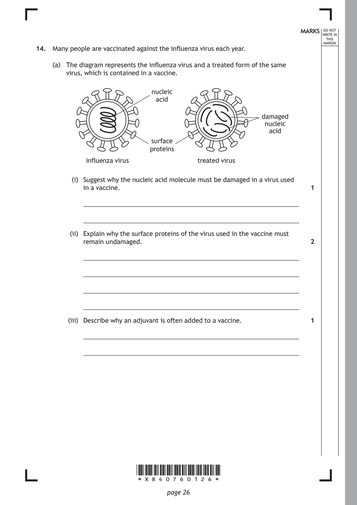
Selectable page text
MARKS DO NOT
WRITE IN
THIS
MARGIN
14. Many people are vaccinated against the influenza virus each year.
(a) The diagram represents the influenza virus and a treated form of the same
virus, which is contained in a vaccine.
nucleic
acid
damaged
nucleic
acid
surface
proteins
influenza virus treated virus
(i) Suggest why the nucleic acid molecule must be damaged in a virus used
in a vaccine. 1
(ii) Explain why the surface proteins of the virus used in the vaccine must
remain undamaged. 2
(iii) Describe why an adjuvant is often added to a vaccine. 1
*X840760126*
page 26PDF page 27
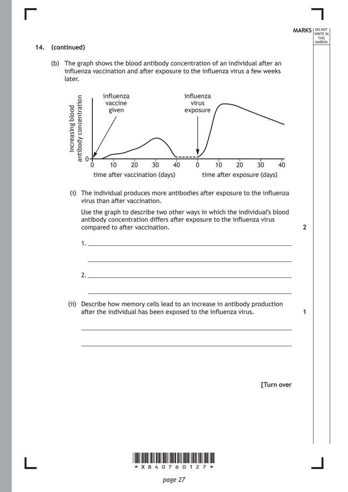
Selectable page text
MARKS DO NOT
WRITE IN
THIS
MARGIN
14. (continued)
(b) The graph shows the blood antibody concentration of an individual after an
influenza vaccination and after exposure to the influenza virus a few weeks
later.
*X840760127*
page 27
doolb
gnisaercni
noitartnecnoc
ydobitna
influenza influenza
vaccine virus
given exposure
0
0 10 20 30 40 0 10 20 30 40
time after vaccination (days) time after exposure (days)
(i) The individual produces more antibodies after exposure to the influenza
virus than after vaccination.
Use the graph to describe two other ways in which the individual’s blood
antibody concentration differs after exposure to the influenza virus
compared to after vaccination. 2
1.
2.
(ii) Describe how memory cells lead to an increase in antibody production
after the individual has been exposed to the influenza virus. 1
[Turn overPDF page 28
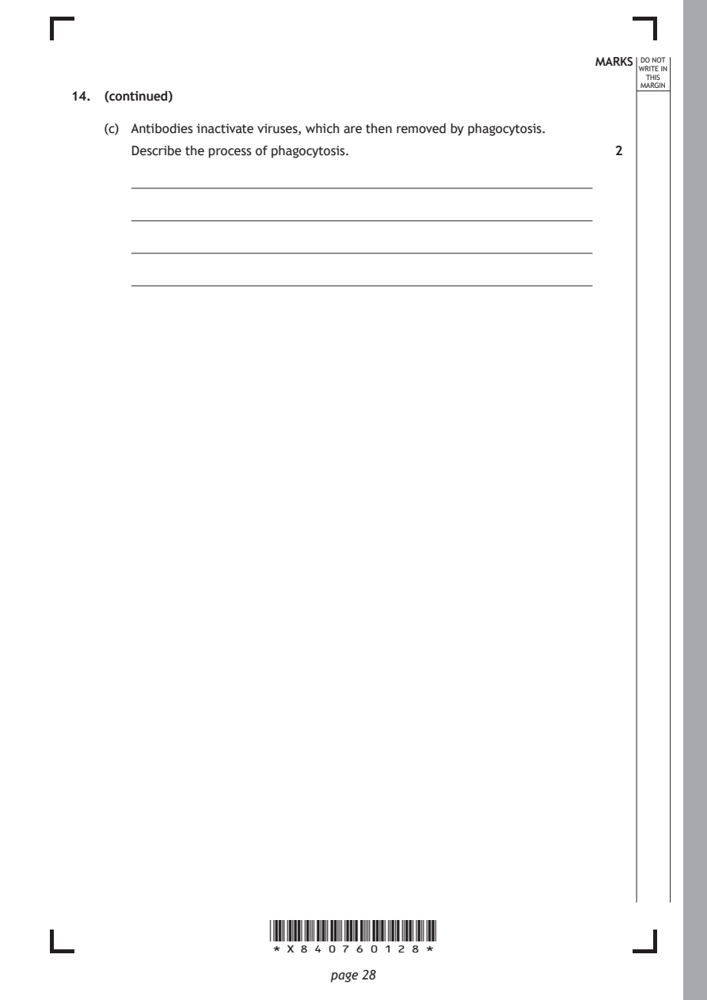
Selectable page text
MARKS DO NOT
WRITE IN
THIS
MARGIN
14. (continued)
(c) Antibodies inactivate viruses, which are then removed by phagocytosis.
Describe the process of phagocytosis. 2
*X840760128*
page 28PDF page 29
Question 15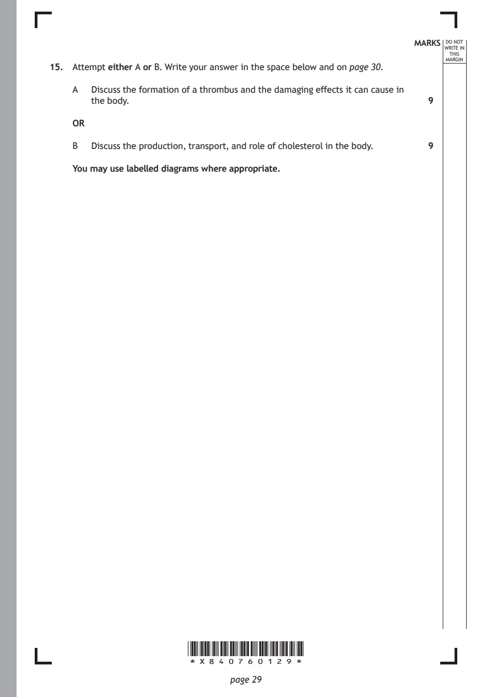
Selectable page text
MARKS DO NOT
WRITE IN
THIS
MARGIN
15. Attempt either A or B. Write your answer in the space below and on page 30.
A Discuss the formation of a thrombus and the damaging effects it can cause in
the body. 9
OR
B Discuss the production, transport, and role of cholesterol in the body. 9
You may use labelled diagrams where appropriate.
*X840760129*
page 29PDF page 30
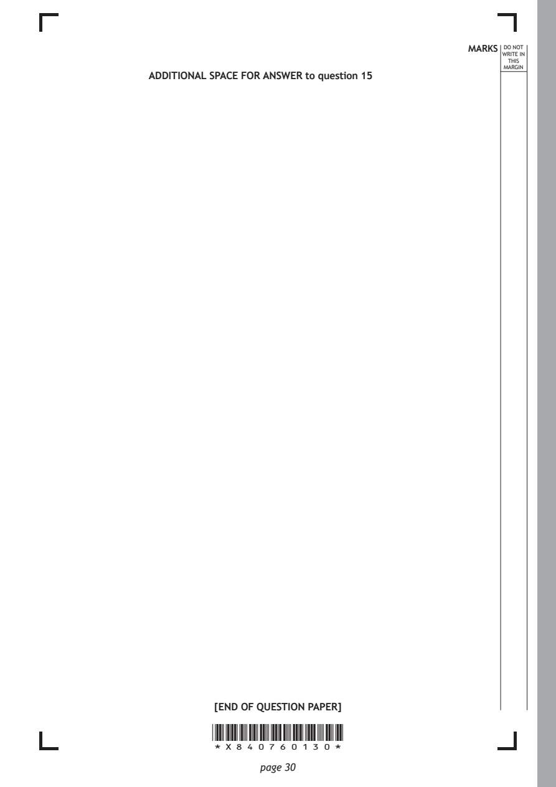
Selectable page text
MARKS DO NOT
WRITE IN
THIS
MARGIN
ADDITIONAL SPACE FOR ANSWER to question 15
[END OF QUESTION PAPER]
*X840760130*
page 30PDF page 31
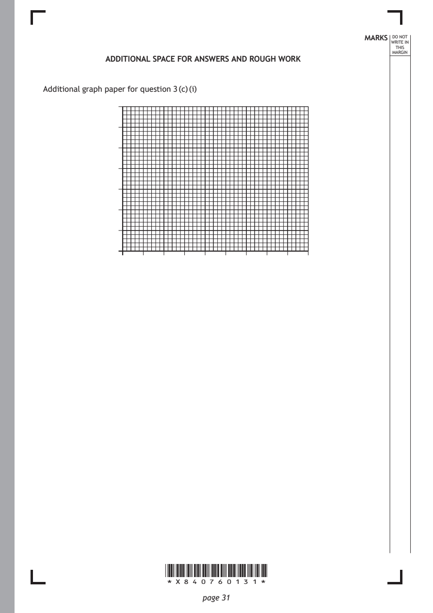
Selectable page text
MARKS DO NOT
WRITE IN
THIS
MARGIN
ADDITIONAL SPACE FOR ANSWERS AND ROUGH WORK
Additional graph paper for question 3 (c) (i)
*X840760131*
page 31PDF page 32

Selectable page text
MARKS DO NOT
WRITE IN
THIS
MARGIN
ADDITIONAL SPACE FOR ANSWERS AND ROUGH WORK
*X840760132*
page 32PDF page 33
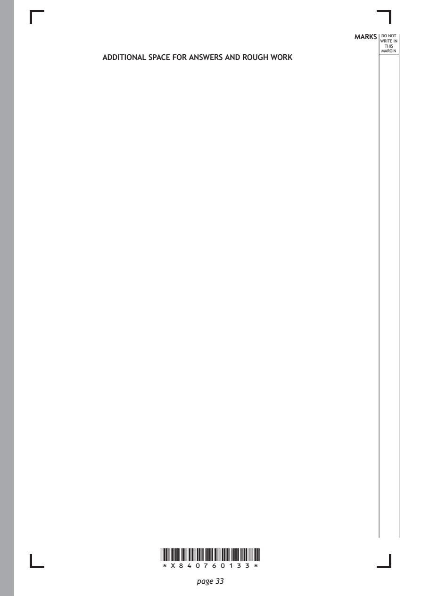
Selectable page text
MARKS DO NOT
WRITE IN
THIS
MARGIN
ADDITIONAL SPACE FOR ANSWERS AND ROUGH WORK
*X840760133*
page 33PDF page 34
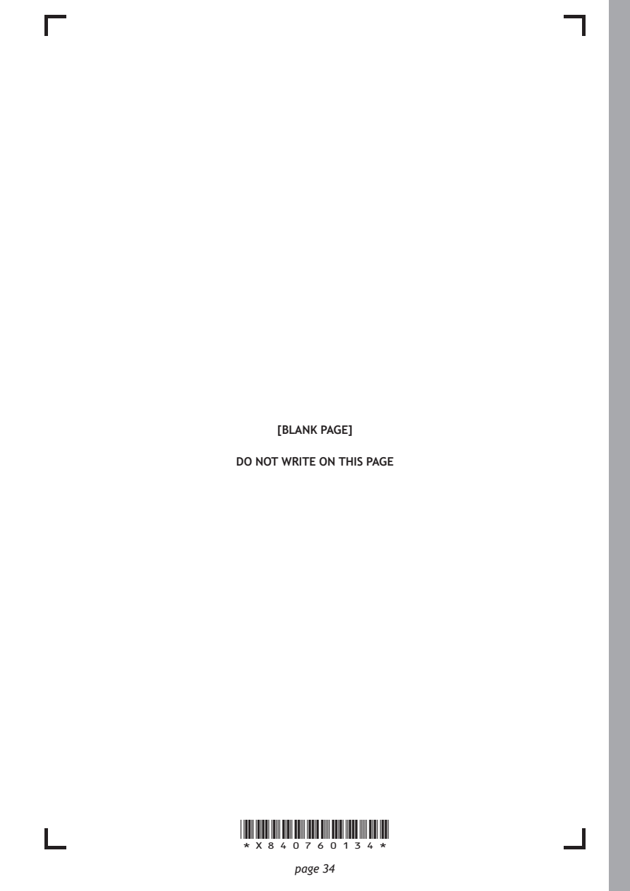
Selectable page text
[BLANK PAGE]
DO NOT WRITE ON THIS PAGE
*X840760134*
page 34PDF page 35
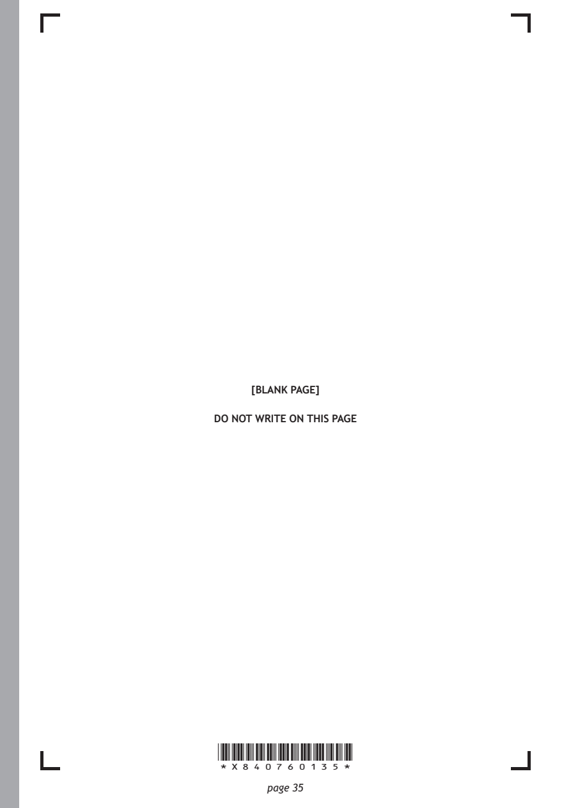
Selectable page text
[BLANK PAGE]
DO NOT WRITE ON THIS PAGE
*X840760135*
page 35PDF page 36
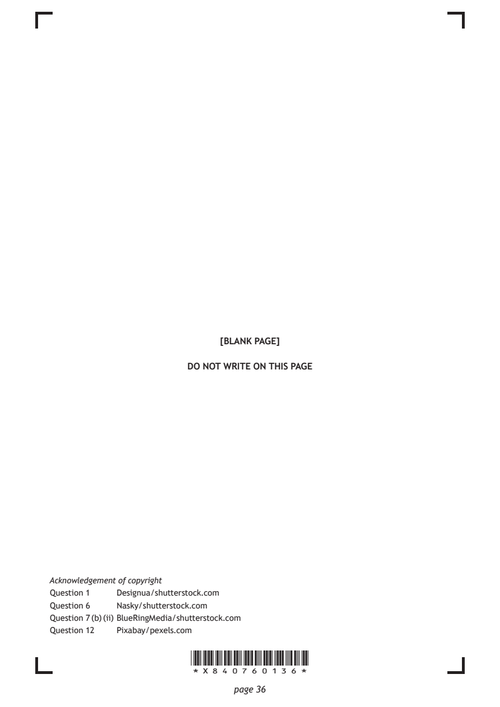
Selectable page text
[BLANK PAGE]
DO NOT WRITE ON THIS PAGE
Acknowledgement of copyright
Question 1 Designua/shutterstock.com
Question 6 Nasky/shutterstock.com
Question 7 (b) (ii) BlueRingMedia/shutterstock.com
Question 12 Pixabay/pexels.com
*X840760136*
page 36